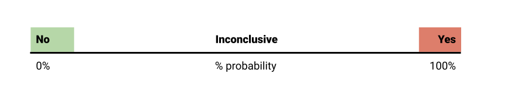

Inconclusive assessment
Communicating an inconclusive assessment
This occurs in two situations:
- When decision-makers or legislation require an unqualified conclusion but assessors judge there is too much uncertainty to give one and report that they cannot conclude. The basis for this uncertainty expression should be documented in the body of the assessment report or an annex, and may include one or more uncertainty expressions
- When it is not required that conclusions must be unqualified, but the assessors are unable to give any quantitative expression of uncertainty or, where they judge that their probability for a conclusion could be anywhere between 0% and 100%. This should be accompanied by a qualitative description of the uncertainties (see description of a precise probability)
An assessment is inconclusive when the assessors are unable to give any quantitative expression of uncertainty or, where they judge that their probability for a conclusion could be anywhere between 0% and 100%.
In this instance, inconclusive implies that nothing further can be said about the conclusion. Therefore, the communication should avoid using language that might suggest otherwise. Include a description of the key sources of uncertainty that are responsible for the inconclusive assessment.
If applicable, also mention options or requirements for obtaining further data to - at best - reduce uncertainty in further assessment.
Another situation where assessment can be declared inconclusive is when decision-makers or legislation require a positive or negative conclusion without any expression of uncertainty. In the GD such conclusions are referred to as unqualified.
But as we all know, a scientific conclusion cannot be stated with absolute certainty.
However, sometimes the certainty in the conclusion is “close enough” to 100% and therefore for practical purposes it can be declared as a yes.
The threshold beyond which the probability can be rounded off to 0 or 100 % is called “practical certainty” in the Uncertainty Analysis Guidance and it should in principle be established by the decision makers (Figure 1).
The actual threshold for “practical certainty” may vary depending on the context, available decision options and their respective costs and benefits.
When uncertainty in the conclusion is not within the margin of practical certainty, but decision-makers still require an unqualified conclusion then the assessment must be reported as inconclusive.
In this instance, “inconclusive” should be interpreted that the practical certainty has not been achieved.
In all cases, the basis for the inconclusive assessment should be documented in the assessment report.